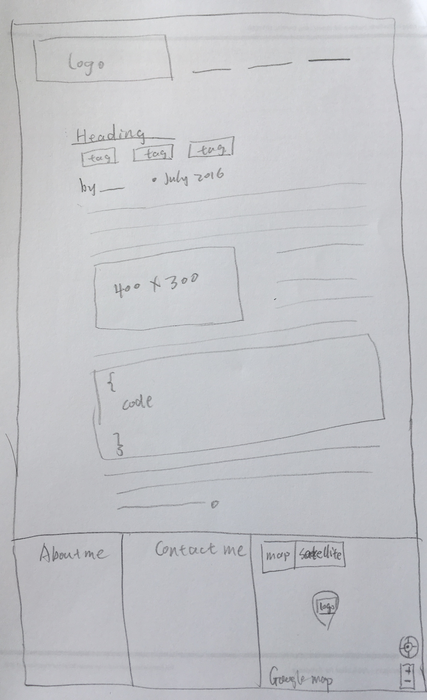
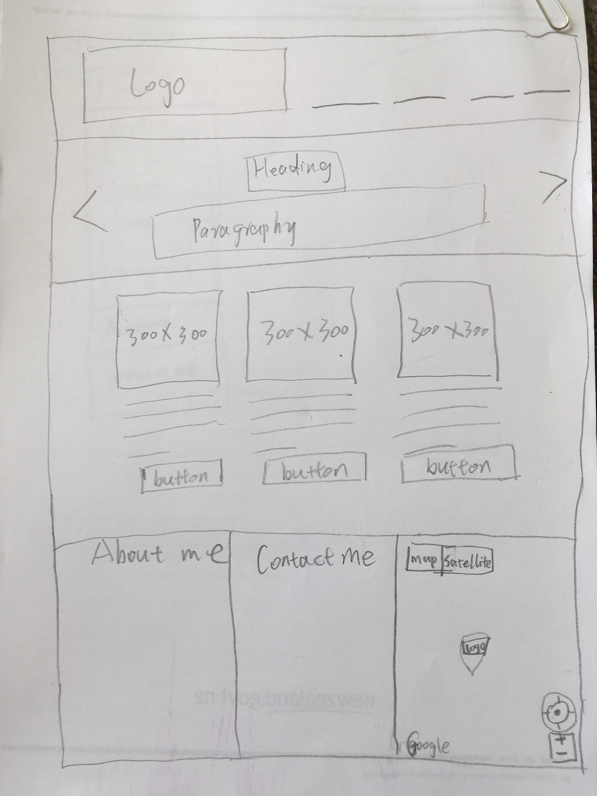
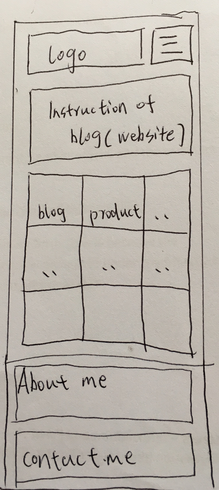
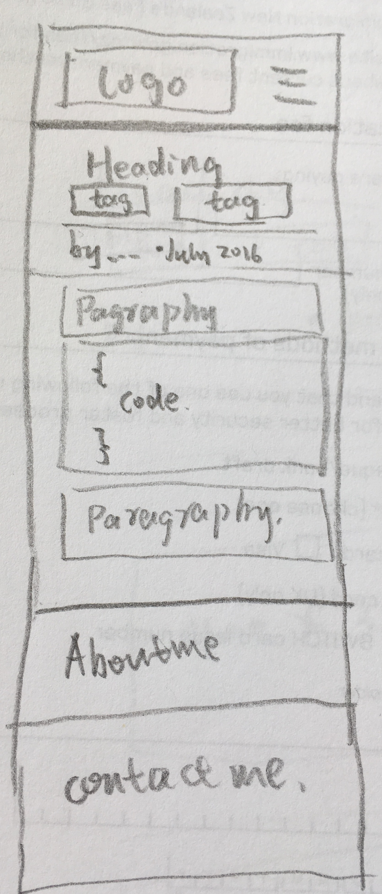

What a responsive site is, and why responsiveness is important.
Responsive is when user access website from different devices with different resolutions, the website should render in different way to make the website more accessible.
Responsive is important, because if a big website is showed in small device, user has to zoom a lot to find what they want. And button and link should be adjusted for fingers to touch.
What mobile first design is, and why it's important.
Design website pages first for mobile screen, then use @media inquiry to adjust style to adapt bigger screen.
What frameworks are, and their pros and cons.
Framework is a set of concepts, and practice for dealing with a common type of problem.
Pros:
- Speeds up mock up process.
- Solution to common problem. Learn best practice.
- Having single set of code to resolve common problem makes maintaining various project more straightforward.
- Helpful collabrative work.
Cons:
- I don't learn to do it myself.
- Slower learning curve.
- Unused code leftover.
- Mixes content and style.
What a wireframe is and why we use it.

wireframe of desktop blog page
Wireframe is a graphic that consists of box and lines, which we used to design the structure of a website. We use it, because it breaks down a complex design into box structures, with which it is easier for us to code semantic html elements.

wireframe of desktop index page

wireframe of mobile index page

wireframe of mobile index page
The aspects of your wireframes you found difficult to implement, and why.
- The aspects of your wireframes you found difficult to implement, and why.
- I'd like the 3 columns per row displayed in desktop still display as 3 columns in mobile. That may need to modify Skeleton framework.
- Images rotator, which might need JavaScript to implement.